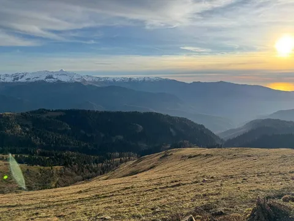
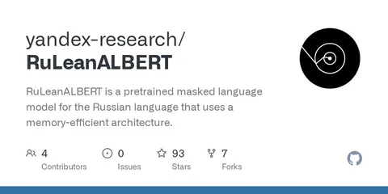
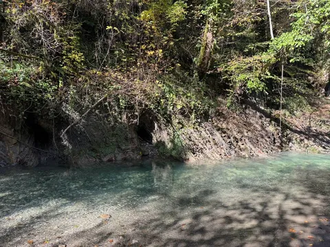

Именно с этой поговоркой криминальных элементов советского времени Сочи ассоциируется и сейчас. Потому что, по-прежнему, многие хотят тут жить. Оно и понятно - тепло, море, кайф.
Я вот, условно говоря, прикуп знаю, и жить в Сочи мог бы. Но не буду, в столице как-то привычней. А вот приехать хотя бы разок за год на недельку пожить тут - за милую душу (уже упоминал об этом тут). Семья чиллит, я работаю, а вечерами и по выходным - можно куда-то прогуляться или съездить.
Строго говоря, люблю я не Сочи, а Сириус и Розу. Сам Сочи/Адлер все же имеет некоторый характерный колорит, который мне не близок. Вот и сейчас в конце октября провел 10 дней в Сириусе. Тут классный офис - тихий, размеренный. Классные кафешки - в 2019 мы даже дали кодовое имя "сулугуни" проекту, который тут запускали. Классная погода - в Москве уже противненько, а тут всегда приятно. Классная природа - море, горы, водопады и даже чайные плантации.
Вот мой топ мест, достойных внимания (точно многое забыл, но сходу так):
Природа:
- гора Ахун (сейчас, правда, башня на ремонте, а без нее смысла нет, но однажды она откроется вновь)
- Воронцовские пещеры (доступно, красиво, цивильно)
- траверс-тропа от Вершины 2200 до Розы Пик (требует определенной выносливости)
- тисо-самшитовая роща (очень приятная тропа, не требует особой подготовки)
Развлечения:
- Сочи Парк (серьезно, не хуже диснейлендов-юниверсалов!)
- галереи старого краснополянского шоссе (нужно брать квадрики/багги)
- санаторий им Орджоникидзе (не знаю, как сейчас, а раньше надо было лезть через забор и убегать от охраны)
- поющие фонтаны в олимпийском парке (я к такому равнодушен, но ребенок в восторге, и они круче дубайских)
Поесть:
- ЛаТерраса (тот самый жареный сулугуни)
- Яблоки печем (колоритно)
- Fish bone (вкусно и не особо дорого)
- Техникум (Роза), Клёво (Сириус) - хоть и московские сети, там хорошо.
Отели:
- Сочи Парк Отель (хорошая инфра на территории)
- Brevis apartments (если все же в старом Сочи - топовый вид с верхних этажей)
- Mio apartments (очень приличные квартирки недорого)
А у вас какие рекоммендации по местам в Сочи?
И, конечно, всегда нужно брать авто в прокат. Мне уже много лет приходит на помощь легковушка-рф. Не реклама, правда классные ребята с супер-гуманным прайсом и человечным отношением к клиенту. У них автопарк по большей части состоит из старых недорогих тачек, но теплых-ламповых. Я успел у них покататься на Lada Largus, Hyundai H1, Chevrolet Uplander, Ford Explorer, Toyota Camry Solara кабриолет, Cadillac CTS, Opel Astra кабриолет и Renault Fluence.
В общем, съездите на недельку в Сочи, там кайфово.
